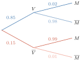
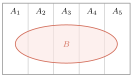
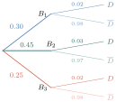
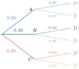

វត្ថុបំណង
- បង្ហាញរូបមន្តប្រូបាបសរុប
- បង្ហាញទ្រឹស្តីបទបៃយេស
- ប្រើរូបមន្តប្រូបាបសរុបក្នុងការដោះស្រាយចំណោទប្រូបាប
- ប្រើទ្រឹស្តីបទបៃយេសក្នុងការដោះស្រាយចំណោទប្រូបាប ។
A. រូបមន្តប្រូបាបសរុប
ឧបមាថានៅក្នុងភូមិមួយមានប្រជាជន \(\displaystyle 85\%\) បានចាក់ថ្នាំការពារជំងឺឆ្លង ។ \(\displaystyle 2\%\) កើតជំងឺឆ្លងដោយដឹងថាចាក់ថ្នាំការពាររួចហើយ ។ \(\displaystyle 1\%\) មិនកើតជំងឺឆ្លងដោយដឹងថាមិនបានចាក់ថ្នាំការពារ ។
- ក. គណនាប្រូបាបអ្នកកើតជំងឺឆ្លង
- ខ. គណនាប្រូបាបអ្នកបានចាក់ថ្នាំការពារ ដោយដឹងថាកើតជំងឺឆ្លង ។
- ក.
ប្រូបាបអ្នកកើតជំងឺឆ្លង
ចំនួនអ្នកកើតជំងឺឆ្លង ជាផលបូកចំនួនអ្នកជំងឺដែលចាក់ថ្នាំការពារនិងអ្នកជំងឺដែលមិនបានចាក់ថ្នាំការពារ
តាងព្រឹត្តិការណ៍ \(\displaystyle V\) : “អ្នកបានចាក់ថ្នាំការពារ”
\(\displaystyle \overline{V}\) : “អ្នកមិនបានចាក់ថ្នាំការពារ”
\(\displaystyle M\) : “អ្នកកើតជំងឺឆ្លង”
\(\displaystyle \overline{M}\) : “អ្នកមិនឆ្លងជំងឺ”
អ្នកជំងឺដែលបានចាក់ថ្នាំការពារ ជាព្រឹត្តិការណ៍ \(\displaystyle M \cap V\)
អ្នកជំងឺដែលមិនបានចាក់ថ្នាំការពារ ជាព្រឹត្តិការណ៍ \(\displaystyle M \cap \overline{V}\)
គេបាន \(\displaystyle P(M) = P(M \cap V) + P(M \cap \overline{V})\)
ដោយ \(\displaystyle P(M \cap V) = P(V) \times P(M/V)\), \(\displaystyle P(M \cap \overline{V}) = P(\overline{V}) \times P(M/\overline{V})\)
\(\displaystyle P(M/\overline{V}) = 1 - P(\overline{M}/\overline{V}) = 1 - \frac{1}{100} = 0.99\)
\(\displaystyle P(M \cap \overline{V}) = 0.15 \times 0.99 = 0.1485\) ។
ដូច្នេះ \(\displaystyle P(M) = P(M \cap V) + P(M \cap \overline{V}) = 0.017 + 0.1485 = 0.1655\) ។
អ្នកកើតជំងឺទាំងអស់មាន \(\displaystyle 16.55\%\) ។
ការរកភាគរយនៃអ្នកកើតជំងឺឆ្លងទាំងអស់ដែលបានចាក់ថ្នាំការពារ និងអ្នកមិនបានចាក់ថ្នាំការពារហៅថា រូបមន្តប្រូបាបសរុប :
\(\displaystyle P(M) = P(M/V) \times P(V) + P(M/\overline{V}) \times P(\overline{V})\) ជាប្រូបាបដែលមានមនុស្សម្នាក់នៅក្នុងភូមិត្រូវកើតជំងឺឆ្លង ។ - ខ.
ប្រូបាបដែលអ្នកបានចាក់ថ្នាំដោយដឹងថាកើតជំងឺ
អ្នកបានចាក់ថ្នាំដោយដឹងថាកើតជំងឺ គឺជាអ្នកចាក់ថ្នាំហើយឆ្លងជំងឺក្នុងចំណោមអ្នកកើតជំងឺ ។
ដូច្នេះ ប្រូបាបដែលអ្នកបានចាក់ថ្នាំដោយដឹងថាកើតជំងឺគឺ\[P(V/M) = \frac{P(V \cap M)}{P(M)} = \frac{P(M/V) \times P(V)}{P(M/V) \times P(V) + P(M/\overline{V}) \times P(\overline{V})} = \frac{0.017}{0.1655} = 0.1027 \text{ ។}\]- តាមការគណនានេះ បានឱ្យដឹងថាភាគរយនៃអ្នកចាក់ថ្នាំការពារហើយឈឺក្នុងចំណោមអ្នកជំងឺគឺ \(\displaystyle 10.27\%\)
ការគណនាភាគរយនេះហៅថា ទ្រឹស្តីបទបៃយេស
បើ \(\displaystyle A_{1}, A_{2}, \dots, A_{n}\) ជាព្រឹត្តិការណ៍មិនចុះសម្រុងគ្នាពីរៗក្នុងលំហសំណាកមួយ ហើយមានព្រឹត្តិការណ៍ \(\displaystyle B\) មួយកើតឡើងក្នុងព្រឹត្តិការណ៍ \(\displaystyle A_{1}, A_{2}, \dots, A_{n}\) នោះ \(\displaystyle B = (A_{1} \cap B) \cup (A_{2} \cap B) \cup \dots \cup (A_{n} \cap B)\)
\[P(B) = P(A_{1} \cap B) + P(A_{2} \cap B) + \dots + P(A_{n} \cap B)\]
ដោយ \(\displaystyle P(A_{i} \cap B) = P(B/A_{i}) \times P(A_{i})\) ចំពោះ \(\displaystyle i = 1, 2, \dots, n\) គេបាន \(\displaystyle P(B) = P(A_{1}) \times P(B/A_{1}) + P(A_{2}) \times P(B/A_{2}) + \dots + P(A_{n}) \times P(B/A_{n})\)
\[P(B) = \sum_{i=1}^{n} [P(B/A_{i}) \times P(A_{i})] \quad \text{រូបមន្តប្រូបាបសរុប}\]
គេមានថង់ពីរដែលថង់ទី 1 មានបាល់ក្រហម \(\displaystyle 2\) និងបាល់ខៀវ \(\displaystyle 1\) ចំណែកឯថង់ទី 2 មានបាល់ក្រហម \(\displaystyle 1\) និងខៀវ \(\displaystyle 3\) ។ កាក់មិនលំអៀងមួយត្រូវបានគេបោះ ។ បើកាក់ផ្ងារខាងមុខ \(\displaystyle (H)\) នោះថង់ទី 1 ត្រូវបានគេជ្រើសរើស ហើយគេទាញបាល់មួយចេញ ។ បើកាក់ផ្ងារខាងខ្នង \(\displaystyle (T)\) នោះថង់ទី 2 ត្រូវបានជ្រើសរើសហើយគេទាញបាល់មួយចេញពីក្នុងថង់ដោយចៃដន្យដូចគ្នា ។ រកប្រូបាបដែលគេទាញបានបាល់ពណ៌ក្រហម ។
មើលចម្លើយ
\(\displaystyle \frac{11}{24}\)
B. ទ្រឹស្តីបទបៃយេស
ទ្រឹស្តីបទបៃយេស បើ \(\displaystyle A_{1}, A_{2}, \dots, A_{k}\) ជាព្រឹត្តិការណ៍មិនចុះសម្រុងគ្នាពីរៗ ក្នុងលំហសំណាក \(\displaystyle S\) នោះចំពោះព្រឹត្តិការណ៍ \(\displaystyle B\) មួយដែល \(\displaystyle P(B) > 0\) គេបានប្រូបាបមានលក្ខខណ្ឌនៃ \(\displaystyle A_{j}\) ដោយដឹងថា \(\displaystyle B\) បានកើតឡើងគឺ
នៅក្នុងខ្សែសង្វាក់ផលិតកម្មមួយ មានម៉ាស៊ីនបី \(\displaystyle B_{1}, B_{2}\) និង \(\displaystyle B_{3}\) ផលិតវត្ថុ \(\displaystyle 30\%, 45\%\) និង \(\displaystyle 25\%\) រៀងគ្នា ។ តាមបទពិសោធន៍កន្លងមក គេដឹងថាម៉ាស៊ីន \(\displaystyle B_{1}, B_{2}\) និង \(\displaystyle B_{3}\) ផលិតបានផលិតផលខូច \(\displaystyle 2\%, 3\%\) និង \(\displaystyle 2\%\) រៀងគ្នា ។
- ក. ឧបមាថាផលិតផលសម្រេចមួយត្រូវបានគេជ្រើសរើសដោយចៃដន្យ ។ រកប្រូបាបដែលវាជាផលិតផលខូច ។
- ខ. បើផលិតផលមួយត្រូវបានគេជ្រើសរើសដោយចៃដន្យ ហើយបានរកឃើញថាវាជាផលិតផលខូច រកប្រូបាបដែលផលិតផលនោះផលិតដោយម៉ាស៊ីន \(\displaystyle B_{3}\) ។
តាងព្រឹត្តិការណ៍ \(\displaystyle B_{1}\) : “ម៉ាស៊ីន \(\displaystyle B_{1}\) ផលិតវត្ថុ” \(\displaystyle B_{2}\) : “ម៉ាស៊ីន \(\displaystyle B_{2}\) ផលិតវត្ថុ” \(\displaystyle B_{3}\) : “ម៉ាស៊ីន \(\displaystyle B_{3}\) ផលិតវត្ថុ” \(\displaystyle D\) : “ជ្រើសរើសបានផលិតផលខូច”

- ក. \[\begin{aligned} P(D) &= P(B_{1}) \cdot P(D/B_{1}) + P(B_{2}) \cdot P(D/B_{2}) + P(B_{3}) \cdot P(D/B_{3}) \\ &= (0.30)(0.02) + (0.45)(0.03) + (0.25)(0.02) = 0.0245 \text{ ។} \end{aligned}\]
- ខ. \(\displaystyle P(B_{3}/D) = \frac{P(B_{3} \cap D)}{P(D)} = \frac{P(B_{3}) \cdot P(D/B_{3})}{P(D)} = \frac{(0.25)(0.02)}{0.0245} = 0.204\) ។
គេមានម៉ាស៊ីន \(\displaystyle A, B\) និង \(\displaystyle C\) ផលិតវត្ថុដូចគ្នា ។ ម៉ាស៊ីន \(\displaystyle A\) ផលិតបាន \(\displaystyle 50\%\), \(\displaystyle B\) បាន \(\displaystyle 30\%\) និង \(\displaystyle C\) បាន \(\displaystyle 20\%\) ។ គេដឹងថាវត្ថុដែលផលិតដោយម៉ាស៊ីន \(\displaystyle A\) មានខូច \(\displaystyle 3\%\), ម៉ាស៊ីន \(\displaystyle B\) ខូច \(\displaystyle 4\%\) និងម៉ាស៊ីន \(\displaystyle C\) ខូច \(\displaystyle 4\%\) ។
- ក. រកប្រូបាបដែលវាជាវត្ថុខូចឧបមាថា វត្ថុមួយត្រូវបានគេចាប់យកដោយចៃដន្យ ។
- ខ. ក្នុងចំណោមវត្ថុខូចចំនួន \(\displaystyle 1000\) តើម៉ាស៊ីន \(\displaystyle A\) ធ្វើខូចចំនួនប៉ុន្មាន? \(\displaystyle B\) ធ្វើខូចចំនួនប៉ុន្មាន? \(\displaystyle C\) ធ្វើខូចចំនួនប៉ុន្មាន?
តាងព្រឹត្តិការណ៍ \(\displaystyle A\) : “ម៉ាស៊ីន \(\displaystyle A\) ផលិតវត្ថុ”, \(\displaystyle B\) : “ម៉ាស៊ីន \(\displaystyle B\) ផលិតវត្ថុ”, \(\displaystyle C\) : “ម៉ាស៊ីន \(\displaystyle C\) ផលិតវត្ថុ”, \(\displaystyle D\) : “ជ្រើសរើសបានវត្ថុខូច”

- ក. ប្រូបាបដែលមានវត្ថុខូច
វត្ថុខូចជាវត្ថុដែលខូច ផលិតក្នុងម៉ាស៊ីន \(\displaystyle A, B\) និង \(\displaystyle C\)
តាមរូបមន្តប្រូបាបសរុប គេបានប្រូបាបដែលមានវត្ថុខូចគឺ
\(\displaystyle P(D) = P(A \cap D) + P(B \cap D) + P(C \cap D)\)
ប្រូបាបដែលវត្ថុខូចផលិតដោយម៉ាស៊ីន \(\displaystyle A\) គឺ \(\displaystyle P(A \cap D)\)
\(\displaystyle P(A \cap D) = P(A) \times P(D/A) = 0.50 \times 0.03 = 0.015\) ។
ប្រូបាបដែលវត្ថុខូចផលិតដោយម៉ាស៊ីន \(\displaystyle B\) គឺ \(\displaystyle P(B \cap D)\)
\(\displaystyle P(B \cap D) = P(B) \times P(D/B) = 0.30 \times 0.04 = 0.012\) ។
ប្រូបាបដែលវត្ថុខូចផលិតដោយម៉ាស៊ីន \(\displaystyle C\) គឺ \(\displaystyle P(C \cap D)\)
\(\displaystyle P(C \cap D) = P(C) \times P(D/C) = 0.20 \times 0.04 = 0.008\) ។
ដូច្នេះ \(\displaystyle P(D) = 0.015 + 0.012 + 0.008 = 0.035\) ។ - ខ.
ចំនួនវត្ថុខូចក្នុងម៉ាស៊ីននីមួយៗក្នុងចំណោមវត្ថុខូច \(\displaystyle 1000\)
ប្រូបាបដែលម៉ាស៊ីន \(\displaystyle A\) ផលិតវត្ថុ ដោយដឹងថាវត្ថុខូចគឺ \(\displaystyle P(A/D)\)
ប្រូបាបដែលម៉ាស៊ីន \(\displaystyle B\) ផលិតវត្ថុ ដោយដឹងថាវត្ថុខូចគឺ \(\displaystyle P(B/D)\)
ប្រូបាបដែលម៉ាស៊ីន \(\displaystyle C\) ផលិតវត្ថុ ដោយដឹងថាវត្ថុខូចគឺ \(\displaystyle P(C/D)\) ។
តាមទ្រឹស្តីបទបៃយេស គេបាន\[\begin{aligned} P(A/D) &= \frac{P(D/A) \times P(A)}{P(D)} = \frac{0.03 \times 0.50}{0.035} = 0.428 \\ P(B/D) &= \frac{P(D/B) \times P(B)}{P(D)} = \frac{0.04 \times 0.30}{0.035} = 0.343 \\ P(C/D) &= \frac{P(D/C) \times P(C)}{P(D)} = \frac{0.04 \times 0.20}{0.035} = 0.229 \text{ ។} \end{aligned}\]ក្នុងចំណោមវត្ថុខូច \(\displaystyle 1000\)
- ម៉ាស៊ីន \(\displaystyle A\) ផលិតវត្ថុខូចបានចំនួន \(\displaystyle 1000 \times 0.428 = 428\)
- ម៉ាស៊ីន \(\displaystyle B\) ផលិតវត្ថុខូចបានចំនួន \(\displaystyle 1000 \times 0.343 = 343\)
- ម៉ាស៊ីន \(\displaystyle C\) ផលិតវត្ថុខូចបានចំនួន \(\displaystyle 1000 \times 0.229 = 229\) ។
ក្នុងក្រូចមួយកញ្ជើរមានលាយក្រូចបាត់ដំបង \(\displaystyle 70\%\) និងក្រូចកំពង់ចាម \(\displaystyle 30\%\) ។ គេដឹងថាក្រូចទាំង \(\displaystyle 2\) ប្រភេទនេះ មានផ្លែខ្លះជូរ ផ្លែខ្លះផ្អែម ។ ក្រូចបាត់ដំបងមានក្រូចជូរ \(\displaystyle 5\%\) និងក្រូចកំពង់ចាមមានក្រូចជូរ \(\displaystyle 9\%\) ។ គេជ្រើសរើសក្រូចមួយផ្លែដោយចៃដន្យ ។
- ក. រកប្រូបាបដែលគេជ្រើសរើសបានក្រូចជូរ
- ខ. រកប្រូបាបដែលគេបានក្រូចបាត់ដំបង ដោយដឹងថាវាជាក្រូចជូរ
- គ. រកប្រូបាបដែលគេបានក្រូចកំពង់ចាម ដោយដឹងថាវាជាក្រូចផ្អែម
- ឃ. បើក្នុងកញ្ជើរនេះមានក្រូច \(\displaystyle 1000\) ផ្លែ តើមានក្រូចជូរចំនួនប៉ុន្មានផ្លែ? ក្រូចជូរជាក្រូចបាត់ដំបងមានប៉ុន្មានផ្លែ?
មើលចម្លើយ
- ក. \(\displaystyle 0.062\)
- ខ. \(\displaystyle 0.5645\)
- គ. \(\displaystyle 0.291\)
- ឃ. \(\displaystyle 62\) ផ្លែ, \(\displaystyle 35\) ផ្លែ ។
លំហាត់
ថង់មួយមានកាក់ \(\displaystyle 100\) ដែលកាក់ \(\displaystyle 25\) ត្រឹមត្រូវល្អ និងកាក់ \(\displaystyle 75\) គ្មានលំនឹងល្អ ។ ចំពោះកាក់គ្មានលំនឹងល្អនីមួយៗមានប្រូបាបបោះបានខាងលេខស្មើនឹង \(\displaystyle \frac{1}{3}\) ។ គេចាប់យកកាក់មួយចេញពីថង់ដោយចៃដន្យ រួចបោះ ។
គេតាងព្រឹត្តិការណ៍ \(\displaystyle A\) : “ចាប់បានកាក់ល្អ”
\(\displaystyle B\) : “ចាប់បានកាក់គ្មានលំនឹងល្អ”
\(\displaystyle C\) : “បោះកាក់បានខាងលេខ” ។- ក. គណនាប្រូបាបនៃព្រឹត្តិការណ៍ \(\displaystyle A\) និងព្រឹត្តិការណ៍ \(\displaystyle B\)
- ខ. គណនាប្រូបាបនៃព្រឹត្តិការណ៍ \(\displaystyle C\)
- គ. គណនាប្រូបាបដែលចាប់យកបានកាក់ល្អ ដោយដឹងថាបោះកាក់បានខាងលេខ ។
គ្រូសរសេរសំណួរពីជគណិត និងសំណួរធរណីមាត្រធ្វើជាសន្លឹកឆ្នោតឱ្យសិស្សចាប់ ដើម្បីឆ្លើយយកពិន្ទុដែលប្រូបាបនៃការចាប់បានសំណួរពីជគណិតស្មើនឹងប្រូបាប ដែលចាប់បានសំណួរធរណីមាត្រ ។ គ្រូដឹងថាប្រូបាបដែលសិស្សសុខឆ្លើយត្រូវសំណួរពីជគណិតគឺ \(\displaystyle 0.7\) និងប្រូបាបដែលឆ្លើយសំណួរធរណីមាត្របានត្រឹមត្រូវគឺ \(\displaystyle 0.5\) ។
- ក. រកប្រូបាបដែលសិស្សសុខឆ្លើយត្រូវ
- ខ. គេដឹងហើយថាសុខឆ្លើយសំណួរត្រូវ តើប្រូបាបដែលឆ្លើយត្រូវសំណួរធរណីមាត្រស្មើនឹងប៉ុន្មាន?
គេមានម៉ាស៊ីន \(\displaystyle A, B\) និង \(\displaystyle C\) ផលិតវត្ថុដូចគ្នា ។ ម៉ាស៊ីន \(\displaystyle A\) ផលិតបាន \(\displaystyle 40\%\), \(\displaystyle B\) បាន \(\displaystyle 35\%\) និង \(\displaystyle C\) បាន \(\displaystyle 25\%\) ។ គេដឹងថាវត្ថុដែលផលិតដោយម៉ាស៊ីន \(\displaystyle A\) មានខូច \(\displaystyle 3\%\), ម៉ាស៊ីន \(\displaystyle B\) បានខូច \(\displaystyle 4\%\) និងម៉ាស៊ីន \(\displaystyle C\) ខូច \(\displaystyle 4\%\) ។
- ក. រកប្រូបាបដែលមានវត្ថុខូច
- ខ. ក្នុងចំណោមវត្ថុខូចចំនួន \(\displaystyle 1500\) តើម៉ាស៊ីន \(\displaystyle A\) ធ្វើខូចចំនួនប៉ុន្មាន? \(\displaystyle B\) ធ្វើខូចចំនួនប៉ុន្មាន? \(\displaystyle C\) ធ្វើខូចចំនួនប៉ុន្មាន?
មេរៀនសង្ខេប
- ប្រូបាបនៃព្រឹត្តិការណ៍ \(\displaystyle A\) ជាផលធៀបនៃចំនួនករណីស្រប និងចំនួនករណីអាច \(\displaystyle P(A) = \frac{n(A)}{n(S)}\)
- បើ \(\displaystyle A\) និង \(\displaystyle B\) ជាព្រឹត្តិការណ៍ \(\displaystyle 2\) ក្នុងលំហសំណាកមួយដែល \(\displaystyle P(A) \neq 0\) នោះប្រូបាបមានលក្ខខណ្ឌនៃព្រឹត្តិការណ៍ \(\displaystyle B\) ដោយដឹង \(\displaystyle A\) គឺ \(\displaystyle P(B/A) = \frac{P(A \cap B)}{P(A)}\) ។
- គេអាចគណនាបានដូចគ្នា \(\displaystyle P(A/B) = \frac{P(A \cap B)}{P(B)} \quad (P(B) \neq 0)\) ។
- តាមរូបមន្តនេះ គេអាចទាញបានប្រូបាបនៃព្រឹត្តិការណ៍ផលគុណ \(\displaystyle A\) និង \(\displaystyle B\) : \(\displaystyle P(A \cap B) = P(A) \times P(B/A) = P(B) \times P(A/B)\) ដែល \(\displaystyle A\) និង \(\displaystyle B\) ជាព្រឹត្តិការណ៍ \(\displaystyle 2\) ដែលមានប្រូបាបមិនសូន្យ ។
- គេថាព្រឹត្តិការណ៍ \(\displaystyle A\) និងព្រឹត្តិការណ៍ \(\displaystyle B\) មិនអាស្រ័យគ្នា កាលណាព្រឹត្តិការណ៍ទាំង \(\displaystyle 2\) ផ្ទៀងផ្ទាត់លក្ខខណ្ឌណាមួយក្នុងចំណោមលក្ខខណ្ឌខាងក្រោម ៖ \(\displaystyle P(A \cap B) = P(A) \times P(B)\) ឬ \(\displaystyle P(A/B) = P(A)\) ឬ \(\displaystyle P(B/A) = P(B)\) ។
- គេថាព្រឹត្តិការណ៍ \(\displaystyle A\) និងព្រឹត្តិការណ៍ \(\displaystyle B\) អាស្រ័យគ្នា កាលណា \(\displaystyle P(A \cap B) \neq P(A) \times P(B)\)
- រូបមន្តប្រូបាបសរុប \(\displaystyle P(B) = \sum_{i=1}^{n} [P(B/A_{i}) \times P(A_{i})]\) ។
- ទ្រឹស្តីបទបៃយេស \(\displaystyle P(A_{j}/B) = \frac{P(B/A_{j}) \times P(A_{j})}{\sum_{j=1}^{k} [P(B/A_{j}) \times P(A_{j})]} \quad j = 1, 2, \dots, k\) ។
លំហាត់ជំពូកទី 8
ក្នុងថង់មួយមានឃ្លី \(\displaystyle 6\) : ឃ្លី \(\displaystyle 3\) មានលេខ \(\displaystyle 1\), ឃ្លី \(\displaystyle 2\) មានលេខ \(\displaystyle 2\) និងឃ្លី \(\displaystyle 1\) មានលេខ \(\displaystyle 3\) ។ គេចាប់យក \(\displaystyle 2\) ព្រមគ្នាដោយចៃដន្យ ។
- ក. ចូរកំណត់លំហសំណាក \(\displaystyle S\) និងគណនាប្រូបាបនៃលទ្ធផលនីមួយៗក្នុងលំហសំណាក
- ខ. គណនាប្រូបាបដែលយកបានឃ្លី \(\displaystyle 2\) មានលេខខុសគ្នា? យកបានឃ្លីលេខ \(\displaystyle 1\) តែ \(\displaystyle 1\) គត់? យកបានឃ្លីលេខ \(\displaystyle 1\) យ៉ាងតិចម្តង?
- គ. គណនាប្រូបាបដែលឃ្លីយកចេញមានផលបូកលេខស្មើនឹង \(\displaystyle 4\) ។
\(\displaystyle A\) និង \(\displaystyle B\) ជាព្រឹត្តិការណ៍ក្នុងលំហសំណាក \(\displaystyle S\) ។ គេស្គាល់ប្រូបាបនៃព្រឹត្តិការណ៍ \(\displaystyle P(A) = 0.3, P(B) = 0.5, P(A \cap B) = 0.2\)
- ក. គណនា \(\displaystyle P(\overline{A}), P(\overline{B}), P(A \cup B)\) (\(\displaystyle \overline{A}, \overline{B}\) ជាព្រឹត្តិការណ៍ផ្ទុយនឹង \(\displaystyle A\) និង \(\displaystyle B\))
- ខ. បង្ហាញថា \(\displaystyle A = (A \cap B) \cup (A \cap \overline{B})\) រួចទាញរក \(\displaystyle P(A \cap \overline{B})\) និង \(\displaystyle P(A \cup \overline{B})\)
- គ. គណនា \(\displaystyle P(\overline{A} \cap B)\) និង \(\displaystyle P(\overline{A} \cup B)\) ។
គេរៀបចំឆ្នោត \(\displaystyle 150\) សន្លឹកដើម្បីលក់ឱ្យអស់មុនពេលចេញផ្ទៀង ដែលក្នុងនោះមានឆ្នោតត្រូវរង្វាន់ \(\displaystyle 7\) សន្លឹក ។
- ក. បើអ្នកទិញ បានទិញឆ្នោត \(\displaystyle 1\) សន្លឹក តើប្រូបាបដែលគាត់ត្រូវរង្វាន់ស្មើនឹងប៉ុន្មាន?
- ខ. បើអ្នកទិញបានទិញឆ្នោត \(\displaystyle 2\) សន្លឹក រកប្រូបាបដែលគាត់ត្រូវរង្វាន់យ៉ាងតិច \(\displaystyle 1\) សន្លឹក?
- គ. ឧបមាថាក្នុងឆ្នោត \(\displaystyle 150\) សន្លឹកនេះមានឆ្នោតត្រូវរង្វាន់ \(\displaystyle \frac{1}{10}\) ។ បើគេទិញឆ្នោត \(\displaystyle 15\) សន្លឹក តើគេប្រាកដក្នុងចិត្តថា ពិតជាត្រូវរង្វាន់ \(\displaystyle \frac{1}{10}\) នេះ ឬទេ? រកប្រូបាប ដែលអ្នកមានឆ្នោតត្រូវយ៉ាងតិច \(\displaystyle 3\) សន្លឹក ។
ក្នុងកម្មវិធីប្រឡងមួយ គ្រូឱ្យសំណួរត្រៀមទៅសិស្ស \(\displaystyle 100\) សំណួរ ។ សិស្សម្នាក់ៗត្រូវចាប់យកសំណួរ \(\displaystyle 3\) ដោយចៃដន្យដើម្បីឆ្លើយ ។ សិស្ស \(\displaystyle A\) រៀបចំដោះស្រាយចម្លើយបាន \(\displaystyle \frac{1}{4}\) នៃសំណួរទាំងអស់ ។ រកប្រូបាបដែលសិស្ស \(\displaystyle A\) ចាប់បានសំណួរដែលបានត្រៀមចម្លើយរួចស្រេច
- ក. \(\displaystyle 3\) សំណួរ
- ខ. \(\displaystyle 2\) សំណួរ
- គ. គ្មានបានសំណួរដែលត្រៀមហើយ \(\displaystyle 1\) សោះ
- ឃ. យ៉ាងតិច \(\displaystyle 1\) សំណួរ ។
គេចាប់បៀមួយដៃមាន \(\displaystyle 8\) សន្លឹកចេញពីហ៊ូបៀ \(\displaystyle 52\) សន្លឹក ។ រកប្រូបាបដែលបៀក្នុងដៃមាន
- ក. សន្លឹកជួងតែ \(\displaystyle 2\) សន្លឹក
- ខ. សន្លឹកការ៉ូ \(\displaystyle 2\) និងសន្លឹកអាត់ \(\displaystyle 1\)
- គ. សន្លឹកការ៉ូ \(\displaystyle 3\) និងសន្លឹកស្តេចចាស់ \(\displaystyle 2\) សន្លឹក ។
- គ្រូចង់ដឹងពីចំណង់ចំណូលចិត្តសិស្សក្នុងវិស័យកីឡា ។ ក្នុងចំណោមសិស្ស \(\displaystyle 30\) នាក់មាន \(\displaystyle 20\) នាក់ចូលចិត្តអានទស្សនាវដ្តីកីឡា \(\displaystyle 14\) នាក់ចូលចិត្តលេងកីឡាផ្ទាល់ និង \(\displaystyle 8\) នាក់ចូលចិត្តទាំង \(\displaystyle 2\) មុខនេះ ។ គ្រូសួរសិស្ស \(\displaystyle 6\) នាក់ដោយចៃដន្យ ។ រកប្រូបាបនៃព្រឹត្តិការណ៍
\(\displaystyle A\) : “សិស្សទាំង \(\displaystyle 6\) នាក់ចូលចិត្តលេងកីឡា ឬអានទស្សនាវដ្តីកីឡា”
\(\displaystyle B\) : “គ្មានសិស្សណាម្នាក់ចូលចិត្តលេងកីឡា”
\(\displaystyle C\) : “មានសិស្សម្នាក់គត់ចូលចិត្តលេងកីឡា” គេហូតយកបៀ \(\displaystyle 1\) សន្លឹកចេញពីហ៊ូបៀ \(\displaystyle 32\) សន្លឹក ។ គេតាងព្រឹត្តិការណ៍ :
\(\displaystyle C\) : “ហូតបៀបានសន្លឹកកឺ”
\(\displaystyle R\) : “ហូតបៀបានសន្លឹកស្តេច”
\(\displaystyle F\) : “ហូតបៀបានសន្លឹកក្រមុំ ឬប៊ិច”- ក. តើព្រឹត្តិការណ៍ \(\displaystyle C\) និង \(\displaystyle R\) អាស្រ័យគ្នាឬទេ?
- ខ. គណនា \(\displaystyle P(C/F)\) ។ តើព្រឹត្តិការណ៍ \(\displaystyle C\) និង \(\displaystyle F\) អាស្រ័យគ្នាឬទេ?
ក្នុងភូមិមួយមានមនុស្ស \(\displaystyle 15\%\) កើតជំងឺ \(\displaystyle M_{a}\) ។ ក្នុងចំណោមអ្នកកើតជំងឺ \(\displaystyle M_{a}\) មាន \(\displaystyle 15\%\) កើតជំងឺ \(\displaystyle M_{b}\) និងក្នុងចំណោមអ្នកមិនកើតជំងឺ \(\displaystyle M_{a}\) មាន \(\displaystyle 4\%\) កើតជំងឺ \(\displaystyle M_{b}\) ។ គេសាកសួរមនុស្សម្នាក់ដោយចៃដន្យ និងគេតាងព្រឹត្តិការណ៍ :
\(\displaystyle A\) : “អ្នកកើតជំងឺ \(\displaystyle M_{a}\)”
\(\displaystyle B\) : “អ្នកកើតជំងឺ \(\displaystyle M_{b}\)”- ក. គណនា \(\displaystyle P(A)\), \(\displaystyle P(B/A)\) និង \(\displaystyle P(B/\overline{A})\)
- ខ. គណនា \(\displaystyle P(B)\) និង \(\displaystyle P(A/B)\) ។
រោងចក្រមួយផលិតអំពូលអគ្គិសនីដែលមាន \(\displaystyle 75\%\) សមតាមខ្នាត និង \(\displaystyle 25\%\) ល្អៀងពីខ្នាត ។ គេធ្វើការជ្រើសរើសរៀបចំអំពូលដែលផលិតរួចដាក់ក្នុងប្រអប់ ។ ដោយការត្រួតពិនិត្យនេះមិនបានល្អិតល្អន់ នោះគេដឹងថាក្នុងចំណោមអំពូលល្អៀងពីខ្នាត គេទទួលយករៀបដាក់ក្នុងប្រអប់ \(\displaystyle 10\%\) និងក្នុងចំណោមអំពូលសមតាមខ្នាត គេទទួលយករៀបទុក \(\displaystyle 90\%\) ។ រកប្រូបាបដែល
- ក. អំពូលមួយត្រូវទទួលយករៀបទុកក្នុងប្រអប់
- ខ. អំពូលមួយសមតាមខ្នាត ដោយដឹងថាជាអំពូលត្រូវទទួលយកទុកក្នុងប្រអប់
- គ. បើគេផលិតអំពូល \(\displaystyle 100\) តើគេយកអំពូលរៀបដាក់ក្នុងប្រអប់ចំនួនប៉ុន្មាន? ហើយក្នុងនោះមានអំពូលល្អសមតាមខ្នាតចំនួនប៉ុន្មាន?
គេមានប្រអប់ \(\displaystyle 2\) ដែលប្រអប់ទី \(\displaystyle I\) មានឃ្លីពណ៌ស \(\displaystyle 2\) គ្រាប់ ខ្មៅ \(\displaystyle 3\) គ្រាប់ និងប្រអប់ទី \(\displaystyle II\) មានឃ្លីពណ៌ស \(\displaystyle 3\) គ្រាប់ ខ្មៅ \(\displaystyle 4\) គ្រាប់ ។ គេជ្រើសរើសប្រអប់មួយដោយចៃដន្យ រួចចាប់យកឃ្លីមួយដោយចៃដន្យចេញពីប្រអប់នេះ ។
- ក. រកប្រូបាបដែលចាប់បានឃ្លីពណ៌ស
- ខ. រកប្រូបាបនៃឃ្លីយកចេញពីថង់ទី 1 ដោយដឹងថាជាឃ្លីពណ៌ខ្មៅ ។
“`[cite: 136, 137, 138, 139, 140, 141, 142, 143, 144]
ចម្លើយលំហាត់
- ក. \(\displaystyle P(A) = \frac{25}{100} = \frac{1}{4}\), \(\displaystyle P(B) = \frac{75}{100} = \frac{3}{4}\)
- ខ. \(\displaystyle P(C) = \frac{1}{4}\cdot\frac{1}{2} + \frac{3}{4}\cdot\frac{1}{3} = \frac{1}{8} + \frac{1}{4} = \frac{3}{8}\)
- គ. \(\displaystyle P(A \mid C) = \frac{1/8}{3/8} = \frac{1}{3}\) ។
- ក. \(\displaystyle P(\text{ត្រូវ}) = 0.5(0.7) + 0.5(0.5) = 0.6\)
- ខ. \(\displaystyle P(\text{ធរណីមាត្រ} \mid \text{ត្រូវ}) = \frac{0.25}{0.60} = \frac{5}{12}\) ។
- ក. \(\displaystyle P(\text{ខូច}) = 0.40(0.03) + 0.35(0.04) + 0.25(0.04) = 0.012 + 0.014 + 0.010 = 0.036\)
- ខ. ក្នុងចំណោម 1500 ខូច៖ ម៉ាស៊ីន \(\displaystyle A = 1500 \times \frac{12}{36} = 500\), ម៉ាស៊ីន \(\displaystyle B = 1500 \times \frac{14}{36} \approx 583\), ម៉ាស៊ីន \(\displaystyle C = 1500 \times \frac{10}{36} \approx 417\) ។
ខ្លឹមសារ៖ សៀវភៅពុម្ពគណិតវិទ្យាថ្នាក់ទី១២ របស់ក្រសួងអប់រំ យុវជន និងកីឡា · វាយអត្ថបទ គូររូបភាពឡើងវិញ និងរៀបចំលើអនឡាញដោយលោកគ្រូ សាន សុខលី សម្រាប់ការសិក្សាដោយឥតគិតថ្លៃ និងមិនរកប្រាក់ចំណេញ។ មិនមែនជាការបោះពុម្ពផ្លូវការរបស់ក្រសួងទេ។